Maiores ídolos do Flamengo
-
Zico (1971 a 1983 e 1985 a 1989)
Chamado de Deus da Gávea, Zico é uma unanimidade entre os torcedores do Flamengo. Maior responsável pelos títulos da Copa Libertadores e Mundial Interclubes de 1981, conquistou uma legião de fãs que o idolatram até os dias de hoje.

-
Gabigol (2019 - 2024)
Herói dos títulos da Libertadores em 2019 e 2022 e maior artilheiro do Flamengo no século XXI. Gabigol é o principal ídolo de uma nova geração de torcedores rubro-negros, que viram o artilheiro ser decisivo pelo clube em toda sua passagem. Com gols em títulos de Libertadores, Brasileirão e Copa do Brasil, Gabi entra no podium dos maiores do Fla, ficando atrás apenas da maior divindade rubro-negra...
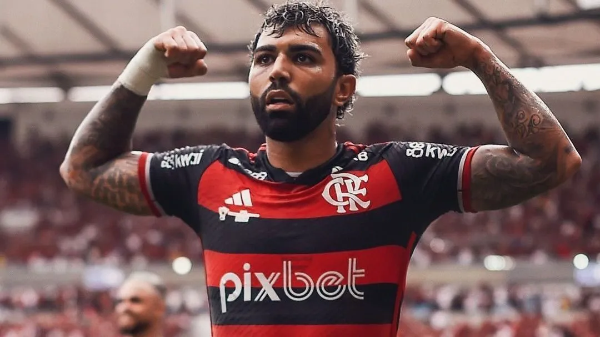 -
Junior (1974 a 1984 e 1989 a 1993)
O grande parceiro de Zico nas maiores conquistas da história do Flamengo. Apesar de ser destro, se consagrou como lateral-esquerdo na seleção brasileira de 1982. Após uma passagem sem muito destaque na Itália, retornou ao clube carioca para ser o líder do time como meia. Ao longo da carreira, vestiu a camisa rubro-negra em 865 partidas, sendo o jogador que mais vezes representou o Flamengo.
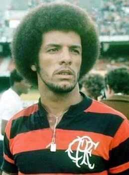 -
Leandro (1979 a 1990)
Maior lateral-direito da história do Rubro-Negro, Leandro atuou no Flamengo durante toda a sua carreira profissional, onde conquistou os títulos da Copa Libertadores e Mundial, além dos Brasileiros de 1980, 82, 83 e 87.
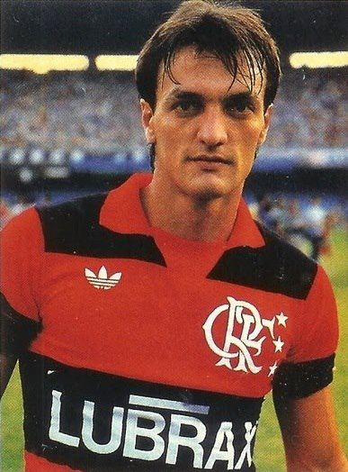 -
Arrascaeta (2019 - atualmente)
Um dos maiores estrangeiros do Flamengo em todos os tempos, Arrascaeta é, desde 2019 até hoje, sinônimo de classe, golaços, visão de jogo e muita raça em campo.
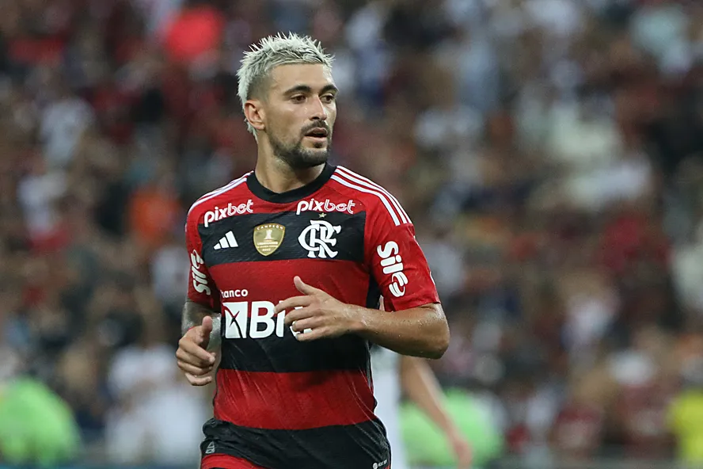 -
Zizinho (1939 a 1950)
Com Zizinho, o Flamengo ganhou o seu primeiro tricampeonato estadual entre 1942, 1943 e 1944. Isso além do Campeonato Carioca de 1939. Zizinho saiu do Flamengo com 329 jogos e 146 gols e considerado o maior ídolo do clube até a aparição de Zico.

-
Leonidas da Silva (1936 a 1941)
Apontado como o melhor jogador da Copa de 1938, o Diamante Negro é apontado considerado um dos primeiros grandes ídolos do futebol brasileiro. Pelo Flamengo, conquistou o carioca de 1939.
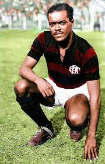 -
Adílio (1975 a 1987)
Considerado um dos mais habilidosos jogadores de sua geração, Adílio brilhou nas conquistas das Copas Libertadores e do Mundial de clubes ao lado de Zico, Andrade e Júnior.
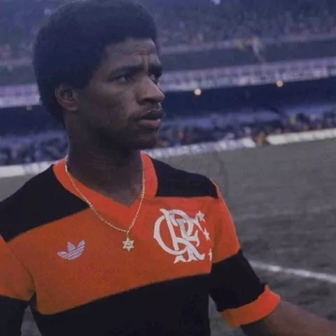 -
Andrade (1979 a 1988)
Um dos maiores campeões da história do Flamengo, Andrade participou de quatro conquistas de Brasileirões pelo Rubro-Negro (1980,82,83 e 87), além de também ter integrado o time campeão da Libertadores e do mundial interclubes. Como se não bastasse, ainda foi um dos principais responsáveis pelo título brasileiro de 2009, quando assumiu um elenco desacreditado e o conduziu como treinador.
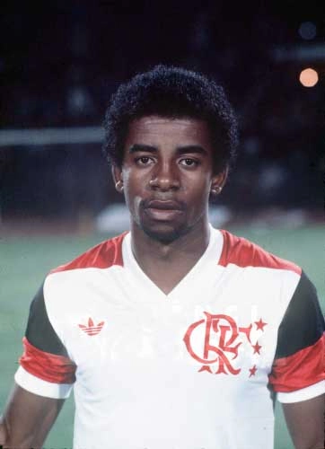 -
Petkovic (2000 a 2002 e 2009 a 2011)
Pet, como também é conhecido, entrou para a história do Flamengo inicialmente pelo gol de falta que garantiu o título estadual de 2001, contra o Vasco. Após uma saída conturbada, o sérvio aceitou retornar como forma de quitar uma dívida que o clube tinha com ele, apesar de muita desconfiança. Ao contrário do que muitos acreditavam, ele se tornou peça fundamental do título nacional de 2009.
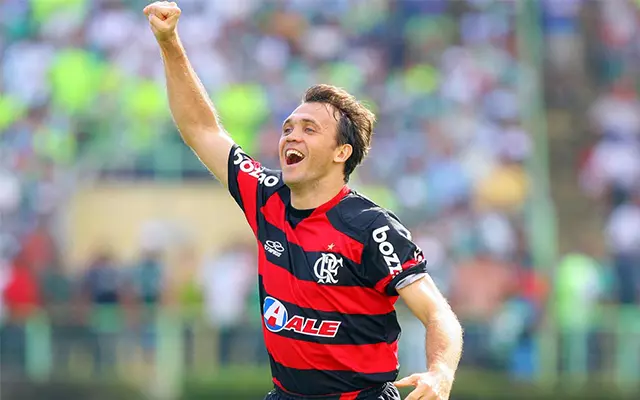 -
Adriano (2000 a 2001, 2009 a 2010 e 2012)
O Imperador sempre foi apontado como uma das principais promessas das categorias de base do Flamengo. Porém, quando chegou ao profissional não foi devidamente aproveitado e logo deixou o clube. Ainda assim, regressou à Gávea, onde foi o herói da conquista do Brasileirão de 2009.
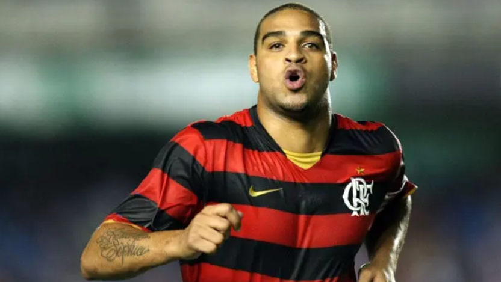 -
Dida (1954 a 1963)
Dida foi o maior ídolo de Zico. O Galinho de Quintino jamais escondeu a admiração pelo atacante e por isso fez de tudo para atuar no Flamengo. Mesmo franzino, tornou-se o maior artilheiro do clube até a era Zico, marcando 257 gols em 364 jogos entre 1954 e 1963.

-
Everton Ribeiro (2017 - 2023)
Meia de grande habilidade, Everton Ribeiro marcou golaços e conquistou títulos importantes representando uma das gerações mais marcantes da história rubro-negra.
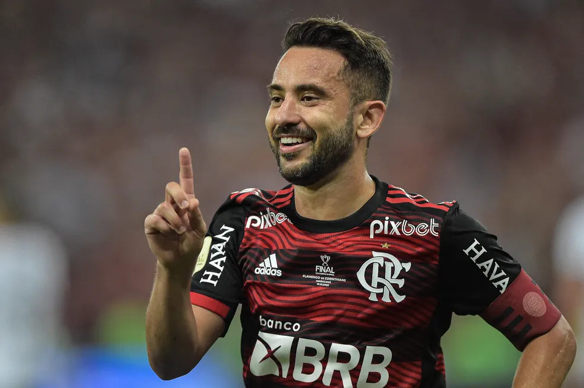 -
Bruno Henrique (2019 - atualmente)
Dono de uma velocidade e impulsão que faz todo rubro-negro dar um sorriso, Bruno Henrique colocou seu lugar na história como um dos maiores artilheiros do Flamengo no século XXI, sendo peça importantíssima em títulos como os da Libertadores de 2019 e Brasileirões de 2019 e 2020 – dentre outras taças.
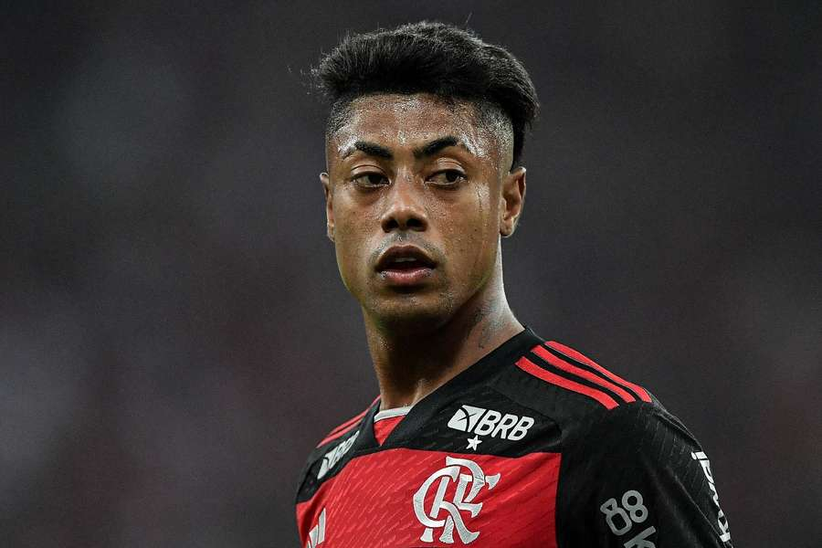 -
Nunes (1980 a 1984)
Após rodar por diversos clubes, Nunes, o João Danado, virou o "Artilheiro das Decisões" com a camisa do Flamengo, onde foi um dos heróis do mundial interclubes, em 1981.
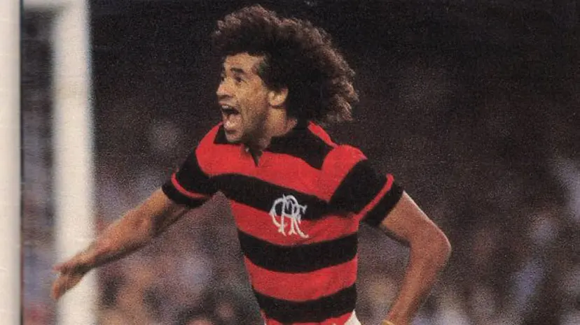 -
Evaristo de Macedo (1953 a 1957 e 1965 a 1967)
Ídolo tanto no Barcelona quanto no Real Madrid, Evaristo de Macedo é apontado como um dos grandes jogadores de sua geração. No Flamengo ele conquistou os estaduais de 1953, 1954, 1955, 1965. Também comandou o clube em três oportunidades como técnico da equipe principal.
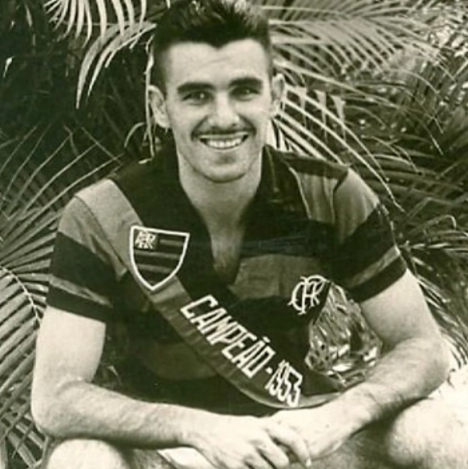 -
Rondinelli (1971 a 1981)
Conhecido pelos torcedores como o "Deus da Raça", foi o herói do título estadual de 1978, quando marcou um inesquecível gol de cabeça contra o Vasco.
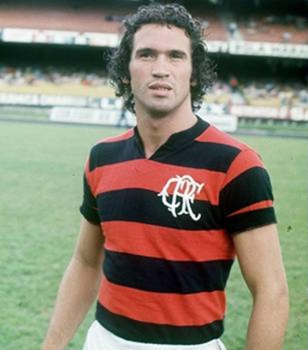 -
Romário (1995 a 1997 e 1998 a 1999)
Eleito o melhor jogador do mundo após a conquista da Copa do Mundo de 1994 pela seleção brasileira, Romário trocou o Barcelona pelo Flamengo. Apesar da badalação, o Baixinho conquistou seu primeiro título só em 1996. Ao longo dos anos defendendo o Rubro-Negro, Romário marcou 204 gols.
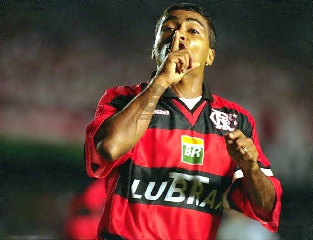 -
Sávio (1992 a 1997 e 2006)
O anjo loiro da Gávea jamais escondeu sua identificação com o Flamengo. Vestido de rubro-negro, integrou os elencos que conquistaram o Brasileirão de 1992 e o carioca de 1996.
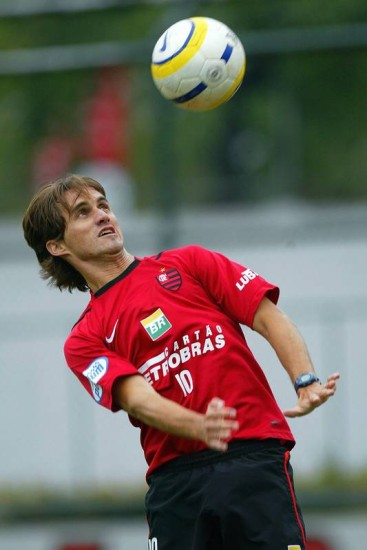 -
Pirillo (1941 a 1947)
Chegou ao Flamengo com a árdua missão de substituir o ídolo Lenidas da Silva. Apesar da desconfiança, logo mostrou seu valor e se tornou uma das referências de ataque do clube carioca. Até hoje é o maior artilheiro de uma edição do campeonato estadual, tendo marcado 39 gols em 1941.
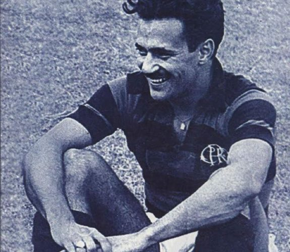